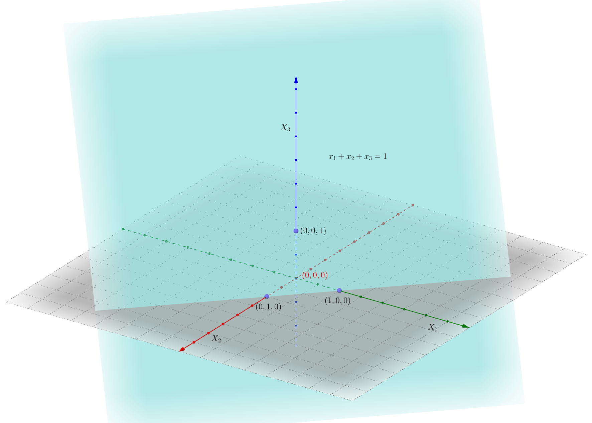
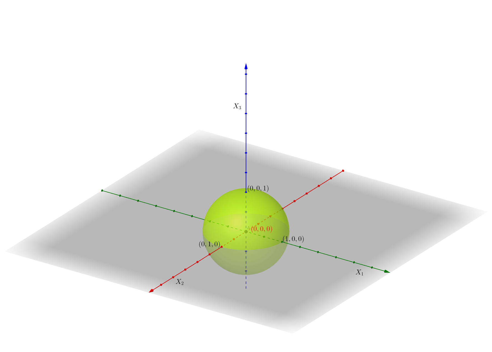
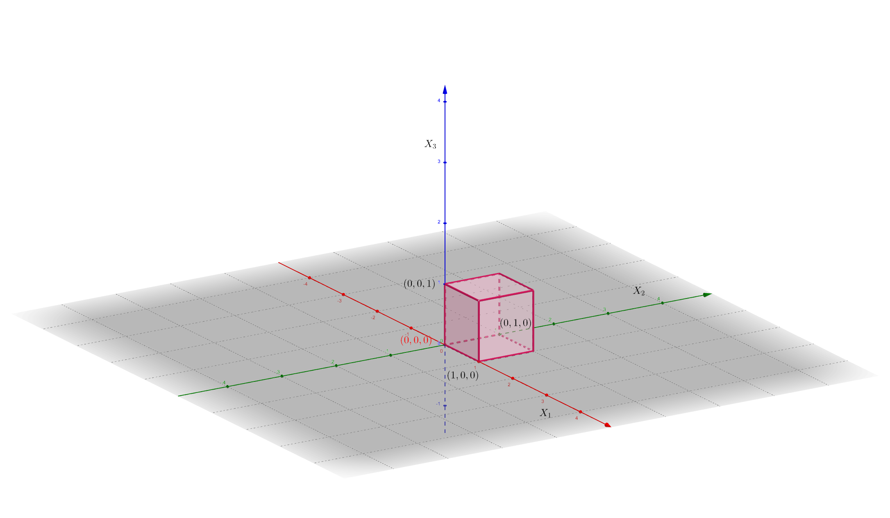
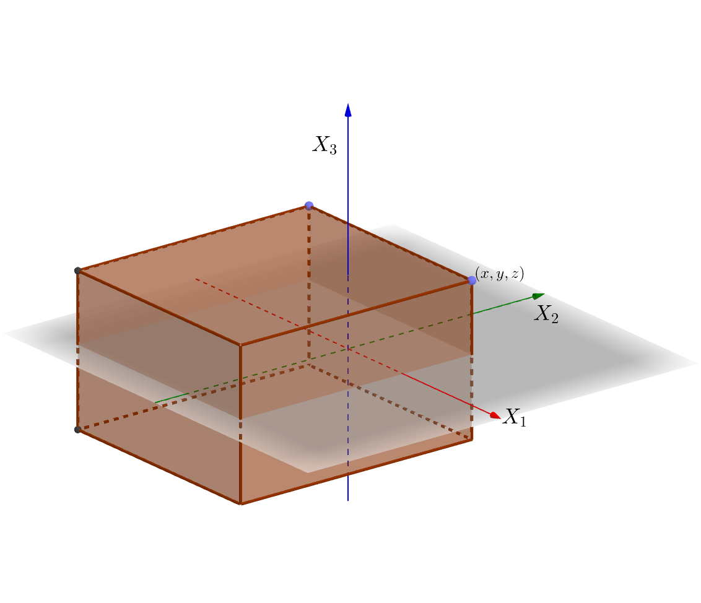
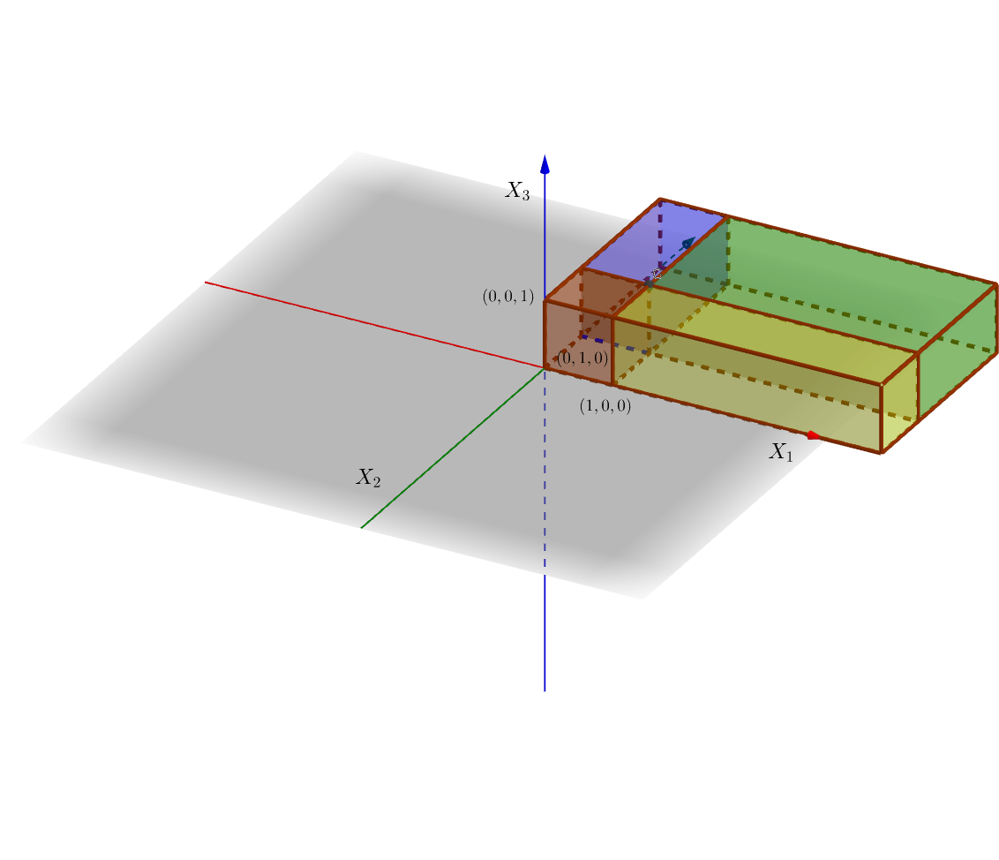
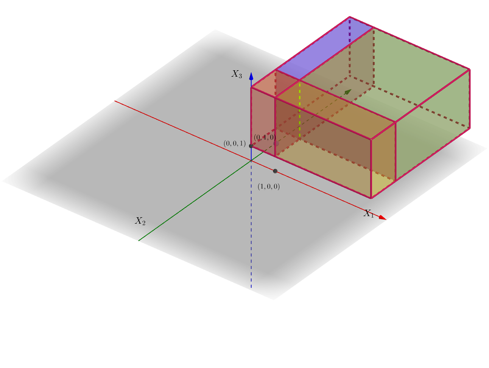
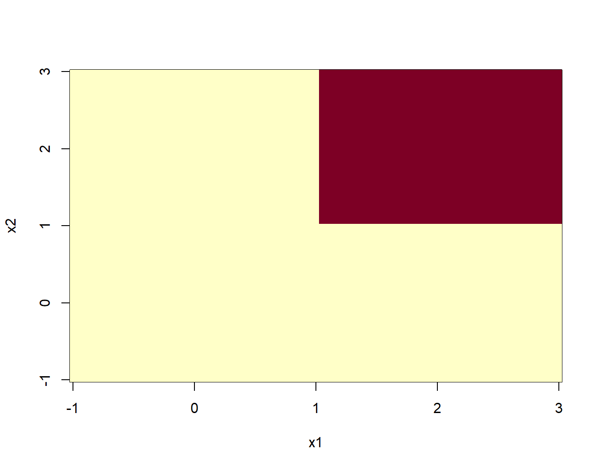
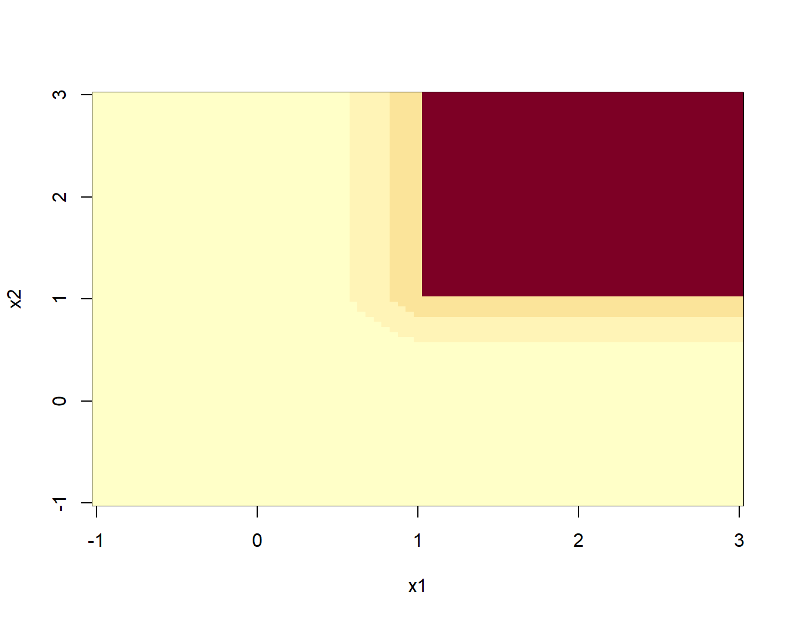
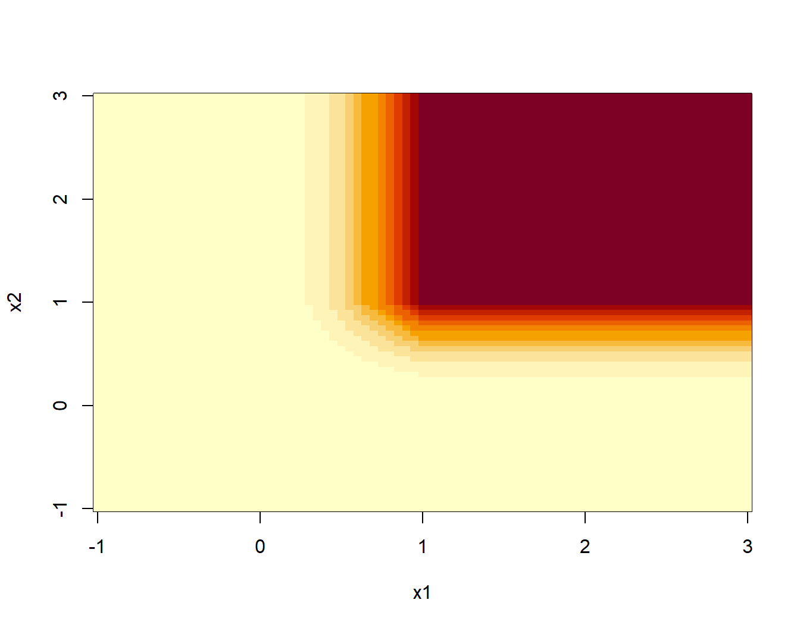

7 Vectores aleatorios
7.1 Varias variables aleatorias
En el capítulo anterior trabajamos con variables aleatorias bidimensionales
En este capítulo vamos a generalizar los conceptos introducidos para variables aleatorias \(n\)-dimensionales, con \(n\geq 3\).
El ejemplo que comentamos en el capítulo de variables aleatorias de medir la temperatura media un día determinado del año durante 10 años es un ejemplo de variable aleatoria 10-dimensional.
7.1.1 Definición
La generalización de la noción de variable aleatoria \(n\)-dimensional a partir de la noción de variable aleatoria bidimensional es bastante obvia:
Ejemplo: puertos entrada internet
Tenemos tres puertos de entrada de paquetes de internet.
Supongamos que cada milisegundo llega un paquete y el switch lo asigna a cada uno de los puertos con probabilidad \(\frac{1}{3}\).
Estudiamos cómo se distribuyen los paquetes en 4 milisegundos.
Sea \(\mathbf{X}=(X_1,X_2,X_3)\) la variable aleatoria 3-dimensional, donde \(X_i\) nos da el número de paquetes que ha recibido el puerto \(i\)-ésimo durante estos 4 milisegundos.
Por ejemplo, el suceso \(\{X_1\leq 1, X_2\geq 3, X_3\leq 1\}\) es \(\{(0,3,0),(0,3,1),(0,4,0),(0,4,1),(1,3,0),(1,3,1),(1,4,0),(1,4,1)\}\).
7.1.2 Representación del dominio de una variable aleatoria \(n\)-dimensional
Los sucesos que se derivan de una variable aleatoria \(n\)-dimensional estan especificados por regiones del espacio \(n\)-dimensional.
Veamos algunos ejemplos:
Suceso: \(\{X_1+X_2+X_3\leq 1\}\). En el gráfico siguiente, el plano \(x_1+x_2+x_3=1\) separa el espacio en dos partes. Es la parte que corresponde al punto \((0,0,0)\).
Si pensamos el plano anterior como un “espejo” es la parte de atrás del mismo.
Suceso: \(\{X_1^2+X_2^2+X_3^2\leq 1\}\). Es el interior de la esfera del gráfico siguiente:

Suceso: \(\{0\leq X_1\leq 1,\ 0\leq X_2\leq 1,\ 0\leq X_3\leq 1\}\). Es el interior del cubo del gráfico siguiente:

La probabilidad de que la variable \(n\)-dimensional pertenezca a una cierta región del \(n\)-espacio \(B\subset \mathbb{R}^n\) se define de la forma siguiente: \[ P((X_1,X_2,\ldots,X_n)\in B)=P\{w\in \Omega,\ |\ (X_1(w),X_2(w),\ldots,X_n)\in B\}, \] dicho de otra manera, la probabilidad anterior es la probabilidad del suceso formado por los elementos de \(w\in\Omega\) que cumplen que su imagen por la variable aleatoria \(n\)-dimensional \((X_1,X_2,\ldots,X_n)\) esté en \(B\).
Por ejemplo, si consideramos \(B=\{X_1+X_2+\cdots +X_n\leq 1\}\), \(P((X_1,X_2,\ldots,X_n)\in B)\) es la probabilidad del suceso formado por los elementos \(w\) de \(\Omega\) tal que la suma de las imágenes por \(X_i\) desde \(i=1\) hasta \(n\) sea menor o igual que 1: \(X_1(w)+\cdots +X_n\leq 1\).
7.2 Función de distribución conjunta
7.2.1 Definición
Dada una variable aleatoria \(n\)-dimensional \((X_1,X_2,\ldots,X_n)\), queremos estudiar cómo se distribuye la probabilidad de sucesos cualesquiera de la forma \(\{(X_1,X_2,\ldots,X_n)\in B\}\), donde \(B\) es una región del espació \(n\)-dimensional \(\mathbb{R}^n\).
Para ello, definimos la función de distribución conjunta:
Es decir, dado un valor \((x_1,\ldots,x_n)\in \mathbb{R}^n\), consideramos la región del espacio \(n\)-dimensional \((-\infty,x_1]\times\cdots\times (-\infty,x_n]\).
Entonces la función de distribución conjunta en el valor \((x_1,\ldots,x_n)\) es la probabilidad del suceso formado por aquellos elementos tal que la imagen por la variable aleatoria \(n\)-dimensional \((X_1,X_2,\ldots,X_n)\) caen dentro de la región anterior:
\[ \begin{array}{rl} F_{X_1\ldots X_n}(x_1,\ldots,x_n) & =P\{w\in\Omega,\ |\ (X_1(w),\ldots,X_n(w)) \\ & \qquad\qquad\in (-\infty,x_1]\times\cdots\times (-\infty,x_n]\} \\ & = P\{w\in\Omega,\ |\ X_1(w)\leq x_1,\ldots, X_n(w)\leq x_n\}. \end{array} \]
El gráfico siguiente muestra el conjunto \((-\infty,x_1]\times (-\infty,x_2]\times (-\infty,x_3]\) en \(\mathbb{R}^3\) para un valor \((x,y,z)\):

7.2.2 Propiedades
Sea \((X_1,X_2,\ldots,X_n)\) una variable \(n\)-dimensional. Sean \(F_{X_1\ldots X_n}\) su función de distribución conjunta. Dicha función satisface las propiedades siguientes:
La función de distribución conjunta es no decreciente en cada una de las variables: \[ \mbox{Si }x_i\leq x_i', \mbox{ para todo $i$, }\mbox{ entonces, }F_{X_1\ldots X_n}(x_1,\ldots,x_n)\leq F_{X_1\ldots X_n}(x_1',\ldots,x_n'). \]
\(F_{X_1\ldots X_n}(x_1,\ldots,x_{i-1},\stackrel{(i)}{-\infty},x_{i+1},\ldots,x_n)=0,\) para todo \(i\) y \(F_{X_1\ldots X_n}(\infty,\ldots,\infty)=1\), para todo \(x_1,\ldots,x_n\in\mathbb{R}\).
Las variables aleatorias \(X_1,\ldots, X_n\) se llaman variables aleatorias marginales y sus funciones de distribución \(F_{X_1},\ldots, F_{X_n}\) pueden hallarse de la forma siguiente como función de la función de distribución conjunta \(F_{X_1\ldots X_n}\): \[ F_{X_i}(x_i)=F_{X_1\ldots X_n}(\infty,\ldots,\infty,\stackrel{(i)}{x_i},\infty,\ldots,\infty), \] para todo \(x_1,\ldots,x_n\in\mathbb{R}\) y para todo \(i=1,\ldots,n\).
La función de distribución conjunta es continua por la derecha en todas las variables \(x_i\): \[ \begin{array}{rl} & \lim\limits_{x_i\to a^+}F_{X_1\ldots X_n}(x_1,\ldots,x_{i-1},\stackrel{(i)}{x_i},x_{i+1},\ldots,x_n) \\ &\qquad =\lim\limits_{x_i\to a, x_i> a}F_{X_1\ldots X_n}(x_1,\ldots,x_{i-1},\stackrel{(i)}{x_i},x_{i+1},\ldots,x_n)\\ &\qquad =F_{X_1\ldots X_n}(x_1,\ldots,x_{i-1},\stackrel{(i)}{a},x_{i+1},\ldots,x_n), \end{array} \] para todo \(a\in\mathbb{R}\) y para todo \(i=1,\ldots,n\).
Ejemplo: densidad tridimensional
Consideremos una variable aleatoria \(3\)-dimensional \((X_1,X_2,X_3)\) con función de distribución conjunta:
\[ F_{X_1X_2X_3}(x_1,x_2,x_3)=\begin{cases} 0, & \mbox{si }x_1<0,\mbox{ o }x_2<0,\mbox{ o }x_3 <0\\ x_1^2\cdot x_2^2\cdot x_3^2, & \mbox{si }0\leq x_1\leq 1,\ 0\leq x_2\leq 1,\ 0\leq x_3\leq 1, \\ x_2^2\cdot x_3^2, & \mbox{si }x_1> 1,\ 0\leq x_2\leq 1,\ 0\leq x_3\leq 1, \\ x_1^2\cdot x_3^2, & \mbox{si }0\leq x_1\leq 1,\ x_2> 1,\ \ 0\leq x_3\leq 1, \\ x_3^2, & \mbox{si }x_1> 1,\ x_2> 1,\ \ 0\leq x_3\leq 1, \\ x_1^2\cdot x_2^2, & \mbox{si }0\leq x_1\leq 1,\ 0\leq x_2\leq 1,\ x_3> 1,\\ x_1^2, & \mbox{si }0\leq x_1\leq 1,\ x_2 > 1,\ x_3> 1,\\ x_2^2, & \mbox{si }x_1>1,\ 0\leq x_2\leq 1,\ x_3> 1,\\ 1, & \mbox{si }x_1\geq 1,\ x_2\geq 1,\ x_3\geq 1. \end{cases} \]
En las figuras siguientes, hemos representado por zonas cómo está definida \(F_{X_1X_2X_3}\).
La primera figura muestra las zonas en la “planta baja” o para \(0\leq x_3\leq 1\). En color marrón, está representada la región \(0\leq x_1\leq 1,\ 0\leq x_2\leq 1,\ 0\leq x_3\leq 1\), en color amarillo, la región \(x_1> 1,\ 0\leq x_2\leq 1,\ 0\leq x_3\leq 1\), en color verde, la región \(x_1>1,\ x_2>1,\ 0\leq x_3\leq 1\) y en color violeta, la región \(0\leq x_1\leq 1,\ x_2>1,\ 0\leq x_3\leq 1\).
La segunda figura muestra las zonas del “primer piso” o para \(x_3>1\). Los colores tienen un significado similar a los de la primera figura: en color marrón, está representada la región \(0\leq x_1\leq 1,\ 0\leq x_2\leq 1,\ x_3> 1\), en color amarillo u ocre, la región \(x_1> 1,\ 0\leq x_2\leq 1,\ x_3> 1\), en color verde, la región \(x_1>1,\ x_2>1,\ x_3> 1\) y en color violeta, la región \(0\leq x_1\leq 1,\ x_2>1,\ x_3> 1\).


Comprobemos algunas de las propiedades que hemos enunciado anteriormente:
Claramente \(F_{X_1X_2X_3}(x_1,x_2,-\infty)=F_{X_1X_2X_3}(x_1,-\infty,x_3)=F_{X_1X_2X_3}(-\infty,x_2,x_3)=0\) ya que \(F_{X_1X_2X_3}(x_1,x_2,x_3)=0\) si \(x_1<0\) o \(x_2<0\) o \(x_3<0\). Por tanto, si hacemos tender \(x_1\) o \(x_2\) o \(x_3\) hacia \(-\infty\), obtendremos que \(F_{X_1X_2X_3}(x_1,x_2,-\infty)=F_{X_1X_2X_3}(x_1,-\infty,x_3)=F_{X_1X_2X_3}(-\infty,x_2,x_3)=0\).
De la misma manera \(F_{X_1X_2X_3}(\infty,\infty,\infty)=1\) ya que \(F_{X_1X_2X_3}(x_1,x_2,x_3)=1\) para \(x_1>1\), \(x_2>1\) y \(x_3>1\). Por tanto, si hacemos tender \(x_1\), \(x_2\) y \(x_3\) hacia \(\infty\), obtendremos \(F_{X_1X_2X_3}(\infty,\infty,\infty)=1\).
Hallemos las marginales: \[ F_{X_1}(x_1)=F_{X_1X_2X_3}(x_1,\infty,\infty)=\begin{cases} 0, & \mbox{ si }x_1 < 0,\\ x_1, & \mbox{ si } 0\leq x_1\leq 1,\\ 1, & \mbox{ si } x_1>1. \end{cases} \] Para ver la expresión anterior basta trazar el plano \(X_1=x_1\) en el gráfico anterior y ver hacia dónde tiende a medida que las variables \(x_2\) y \(x_3\) se van hacia \(\infty\).
¿Habéis averiguado cuál es la distribución de \(X_1\)?
¡Efectivamente!, \(X_1\) es la uniforme en el intervalo \((0,1)\).
Dejamos como ejercicio hallar la distribución marginal para las variables \(X_2\) e \(X_3\).
- Comprobemos que \(F_{X_1X_2X_3}\) es continua por la derecha para las variables \(x_1\), \(x_2\) y \(x_3\) en el punto \((1,1,1)\) que es un punto problemático:
\[ \begin{array}{rl} \lim_{x_1\to 1,x_1> 1} F_{X_1X_2X_3}(x_1,1,1) & =\lim_{x_1\to 1,x_1> 1} 1 = F_{X_1X_2X_3}(1,1,1),\\ \lim_{x_2\to 1,x_2> 1} F_{X_1X_2X_3}(1,x_2,1) & =\lim_{x_2\to 1,x_2> 1} 1 = F_{X_1X_2X_3}(1,1,1),\\ \lim_{x_3\to 1,x_3> 1} F_{X_1X_2X_3}(1,1,x_3) & =\lim_{x_3\to 1,x_3> 1} 1 = F_{X_1X_2X_3}(1,1,1). \end{array} \]
Ejemplo: cálculo con R distribución conjunta
Realizar un gráfico 3D de la función de distribución conjunta no es posible ya que deberíamos pasar a \(\mathbb{R}^4\).
Lo que sí es posible es dibujar las curvas de nivel de dicha función para un valor de \(x_3\) fijado.
El los gráficos siguientes dibujamos las curvas de nivel para \(x_3=0,0.5,1\) i \(x_3=1.5\).
Primero definimos la función y luego la dibujamos para \(x_1\) y \(x_2\) entre \(-1\) y \(3\):
f.dist.con = function(x1,x2,x3){ifelse(x1<0 | x2<0 | x3 <0,0,
ifelse(x1>=0 & x1<=1 & x2>=0 & x2<=1 & x3>=0 & x3<=1,
x1^2*x2^2*x3^2,
ifelse(x1>1 & x2>=0 & x2<=1 & x3>=0 & x3<=1,
x2^2*x3^2,
ifelse(x1>=0 & x1<=1 & x2>1 & x3>=0 & x3<=1,
x1^2*x3^2,
ifelse(x1>=0 & x1<=1 & x2>=0 & x2<=1 & x3>1,
x1^2*x2^2,
ifelse(x1>=0 & x1<=1 & x2 >1 & x3 >1,x1^2,
ifelse(x1>1 & x2 >=0 & x2<=1 & x3 >1,x2^2,
ifelse(x1>=0 & x1<=1 & x2>=0 & x2<=1 & x3 >1,
x3^2,1))))))))}
x1=seq(from=-1,to=3,by=0.05)
x2=seq(from=-1,to=3,by=0.05)
curva.nivel.0=outer(x1,x2,f.dist.con,x3=0)
curva.nivel.0.5=outer(x1,x2,f.dist.con,x3=0.5)
curva.nivel.1=outer(x1,x2,f.dist.con,x3=1)
curva.nivel.1.5=outer(x1,x2,f.dist.con,x3=1.5)
image(x1,x2,curva.nivel.0)
image(x1,x2,curva.nivel.0.5)
image(x1,x2,curva.nivel.1)
image(x1,x2,curva.nivel.1.5)Ejemplo del lanzamiento de un dado tres veces
Consideremos el experimento aleatorio que consiste en lanzar un dado tres veces.
El espacio \(\Omega\) de resultados es: \[ \Omega =\{(i,j,k),\ | i,j,k=1,2,3,4,5,6\}. \] En total tendremos \(6\cdot 6\cdot 6=6^3=216\) resultados posibles.
Consideremos la variable 3-dimensional \(\mathbf{X}=(X_1,X_2,X_3)\), donde \(X_1\) nos da el número de 1’s obtenidos, \(X_2\), el número de 2’s y \(X_3\), el número de 3’s.
El conjunto \(\mathbf{X}(\Omega)\) tiene en total 64 elementos ya que cada componente \(X_i\) puede tener en total 4 resultados: 0, 1, 2 o 3. Por tanto el conjunto total de resultados es: \(4\cdot 4\cdot 4=4^3=64\).
El valor de función de distribución conjunta en el resultado \((0,0,0)\) es:
\[ F_{X_1X_2X_3}(0,0,0)=p(X_1\leq 0,\ X_2\leq 0,\ X_3\leq 0)=\frac{3^3}{6^3}=\left(\frac{1}{2}\right)^3 =0.125, \] ya que si \(X_1\leq 0\), \(X_2\leq 0\) y \(X_3\leq 0\), significa que no ha salido ni ningún 1, ni ningún 2 ni ningún 3. Sólo pueden salir 4’s, 5’s o 6’s y existen \(3\cdot 3\cdot 3=3^3=27\) posibilidades de que esto pase entre \(6^3=216\) posibilidades posibles.
7.3 Variables aleatorias \(n\)-dimensionales discretas
En la mayoría de los casos, dicho conjunto es un subconjunto de los enteros naturales.
Ejemplo
La variable aleatoria 3-dimensional anterior que nos daba el número de 1’s obtenidos, el número de 2’s y el número de 3’s es discreta ya que
\[ \begin{array}{rl} \mathbf{X}(\Omega) =& \{ (0,0,0),(1,0,0),(0,1,0),(0,0,1),(2,0,0),(0,2,0),\\ & (0,0,2),(3,0,0),(0,3,0),(0,0,3),(0,1,1),(1,0,1),\\ & (1,1,0),(0,1,2),(0,2,1),(1,0,2),(2,0,1),(1,2,0),\\ & (2,1,0),(0,1,3),(0,3,1),(1,0,3),(3,0,1),(1,3,0),\\ & (3,1,0),(0,2,2),(2,0,2),(2,2,0),(0,2,3),(3,2,0),\\ & (2,0,3),(3,0,2),(2,3,0),(3,2,0),(0,3,3),(3,0,3),\\ & (3,3,0),(1,1,1),(1,1,2),(1,2,1),(2,1,1),(1,1,3),\\ & (1,3,1),(3,1,1),(1,2,2),(2,1,2),(2,2,1),(1,2,3),\\ & (2,1,3),(1,3,2),(3,1,2),(2,3,1),(3,2,1),(1,3,3),\\ & (3,1,3),(3,3,1),(2,2,2),(2,2,3),(2,3,2),(3,2,2),\\ & (2,3,3),(3,2,3),(3,3,2),(3,3,3)\}. \end{array} \]
7.3.1 Función de probabilidad conjunta
\[ \begin{array}{rl} P_{X_1\ldots X_n}: \mathbb{R}^n & \longrightarrow \mathbb{R}\\ (x_{i_1},x_{i_2},\ldots,x_{i_n}) & \longrightarrow P_{X_1\ldots X_n}(x_{i_1},x_{i_2},\ldots,x_{i_n})=P(X= x_{i_1},\ldots X_n= x_{i_n}). \end{array} \]
Por tanto, de cara a calcular \(P_{X_1\ldots X_n}\) basta calcular \(P_{X_1\ldots X_n}(x_{i_1},\ldots,x_{i_n})\) para \((x_{i_1},\ldots,x_{i_n})\in (X_1\ldots,X_n)(\Omega)\).
Los valores de \(P_{X_1\ldots X_n}(x_{i_1},\ldots,x_{i_n})\) estarían organizados en una tabla \(n\)-dimensional.
Ejemplo de la variable 3-dimensional que nos da el número de 1’s, 2’s y 3’s en el lanzamiento de un dado tres veces
Para mostrar la función de probabilidad conjunta haremos una tabla bidimensional para cada valor de \(X_3\).
Como \(X_3(\Omega)=\{0,1,2,3\}\), en total mostraremos 4 tablas bidimensionales.
Tabla para \(X_3=0\):
| \(X_1/X_2\) | 0 | 1 | 2 | 3 |
|---|---|---|---|---|
| 0 | \(\frac{1}{8}\) | \(\frac{1}{8}\) | \(\frac{1}{24}\) | \(\frac{1}{216}\) |
| 1 | \(\frac{1}{8}\) | \(\frac{1}{12}\) | \(\frac{1}{72}\) | \(0\) |
| 2 | \(\frac{1}{24}\) | \(\frac{1}{72}\) | \(0\) | \(0\) |
| 3 | \(\frac{1}{216}\) | \(0\) | \(0\) | \(0\) |
Tabla para \(X_3=1\):
| \(X_1/X_2\) | 0 | 1 | 2 | 3 |
|---|---|---|---|---|
| 0 | \(\frac{1}{8}\) | \(\frac{1}{12}\) | \(\frac{1}{72}\) | \(0\) |
| 1 | \(\frac{1}{12}\) | \(\frac{1}{36}\) | \(0\) | \(0\) |
| 2 | \(\frac{1}{72}\) | \(0\) | \(0\) | \(0\) |
| 3 | \(0\) | \(0\) | \(0\) | \(0\) |
Tabla para \(X_3=2\):
| \(X_1/X_2\) | 0 | 1 | 2 | 3 |
|---|---|---|---|---|
| 0 | \(\frac{1}{24}\) | \(\frac{1}{72}\) | \(0\) | \(0\) |
| 1 | \(\frac{1}{72}\) | \(0\) | \(0\) | \(0\) |
| 2 | \(0\) | \(0\) | \(0\) | \(0\) |
| 3 | \(0\) | \(0\) | \(0\) | \(0\) |
Tabla para \(X_3=3\):
| \(X_1/X_2\) | 0 | 1 | 2 | 3 |
|---|---|---|---|---|
| 0 | \(\frac{1}{216}\) | \(0\) | \(0\) | \(0\) |
| 1 | \(0\) | \(0\) | \(0\) | \(0\) |
| 2 | \(0\) | \(0\) | \(0\) | \(0\) |
| 3 | \(0\) | \(0\) | \(0\) | \(0\) |
La función fun.prod.con nos da la función de probabilidad conjunta de la variable aleatoria \(\mathbf{X}\) cuando lanzamos un dado tres veces:
fun.prob.con=function(x1,x2,x3){
n=6
cuenta.1 =function(x){length(x[x==1])}
cuenta.2 =function(x){length(x[x==2])}
cuenta.3 =function(x){length(x[x==3])}
Dxyz=data.frame(d1=rep(1:n,each=n),d2=rep(1:n,times=n),
d3=rep(1:n,each=n*n))
X1=apply(Dxyz,1,cuenta.1)
X2=apply(Dxyz,1,cuenta.2)
X3=apply(Dxyz,1,cuenta.3)
frecuencia = table(X1==x1 & X2==x2 & X3==x3)
res=ifelse(length(frecuencia)==2,frecuencia[2],0)
return(res/6^3)
}Para construir la tabla de la función de probabilidad conjunta para la variable \(\mathbf{X}=(X_1,X_2,X_3)\) con \(X_3=0\) hacemos lo siguiente:
valores.variables=0:3
tabla.0 = c()
for (i in 1:length(valores.variables)){
for (j in 1:length(valores.variables)){
tabla.0=c(tabla.0,
fun.prob.con(valores.variables[i],
valores.variables[j],0));
}
}
tabla.0 = matrix(tabla.0,length(valores.variables),
length(valores.variables))
rownames(tabla.0)=valores.variables
colnames(tabla.0)=valores.variables
knitr::kable(tabla.0)Con los demás valores de \(X_3\), lo haríamos de forma similar.
Tabla con \(X_3=0\):
| 0 | 1 | 2 | 3 | |
|---|---|---|---|---|
| 0 | 0.1250000 | 0.1250000 | 0.0416667 | 0.0046296 |
| 1 | 0.1250000 | 0.0833333 | 0.0138889 | 0.0000000 |
| 2 | 0.0416667 | 0.0138889 | 0.0000000 | 0.0000000 |
| 3 | 0.0046296 | 0.0000000 | 0.0000000 | 0.0000000 |
Tabla con \(X_3=1\):
| 0 | 1 | 2 | 3 | |
|---|---|---|---|---|
| 0 | 0.1250000 | 0.0833333 | 0.0138889 | 0 |
| 1 | 0.0833333 | 0.0277778 | 0.0000000 | 0 |
| 2 | 0.0138889 | 0.0000000 | 0.0000000 | 0 |
| 3 | 0.0000000 | 0.0000000 | 0.0000000 | 0 |
Tabla con \(X_3=2\):
| 0 | 1 | 2 | 3 | |
|---|---|---|---|---|
| 0 | 0.0416667 | 0.0138889 | 0 | 0 |
| 1 | 0.0138889 | 0.0000000 | 0 | 0 |
| 2 | 0.0000000 | 0.0000000 | 0 | 0 |
| 3 | 0.0000000 | 0.0000000 | 0 | 0 |
Tabla con \(X_3=3\):
| 0 | 1 | 2 | 3 | |
|---|---|---|---|---|
| 0 | 0.0046296 | 0 | 0 | 0 |
| 1 | 0.0000000 | 0 | 0 | 0 |
| 2 | 0.0000000 | 0 | 0 | 0 |
| 3 | 0.0000000 | 0 | 0 | 0 |